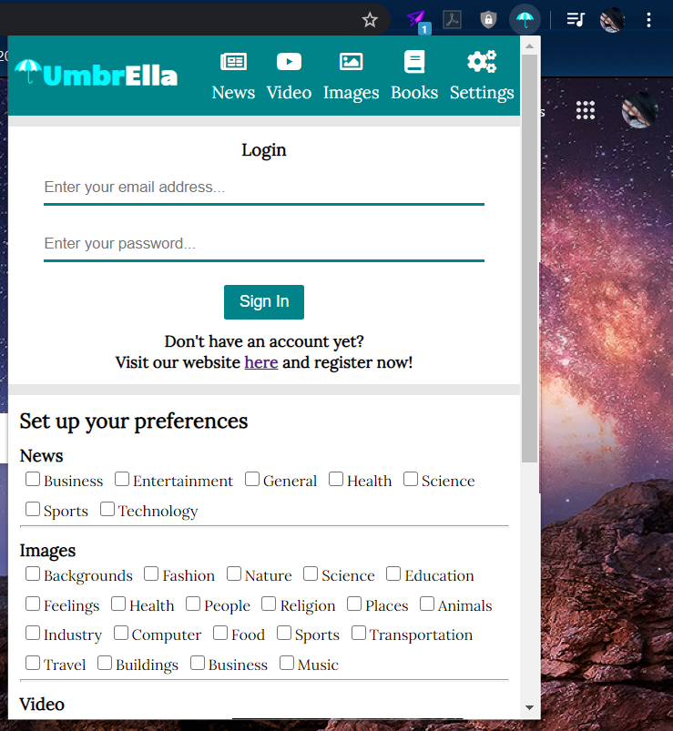
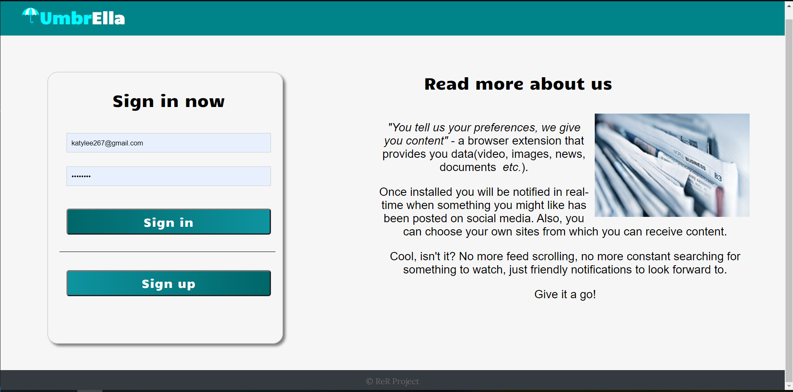
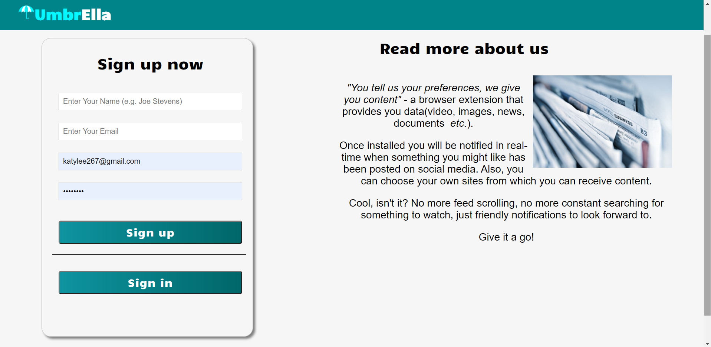
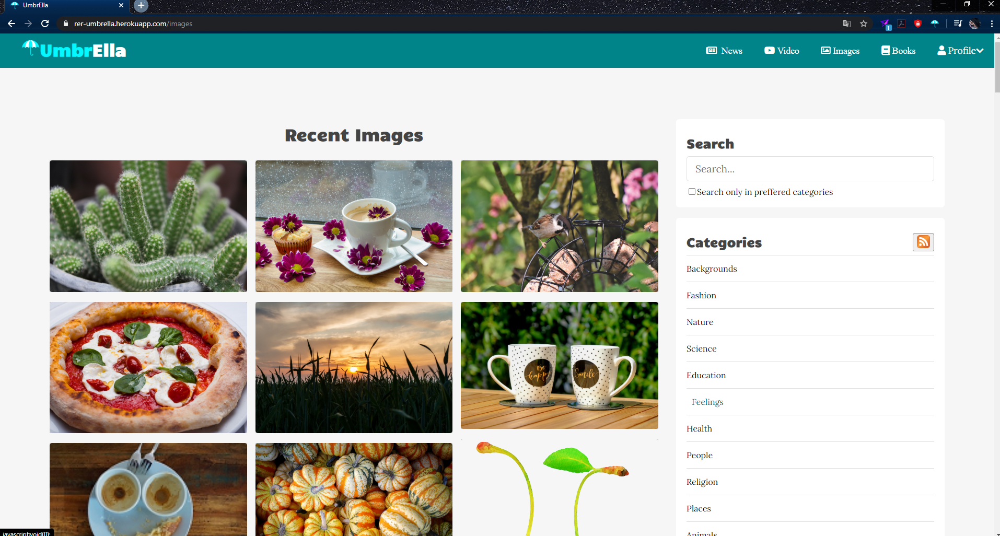
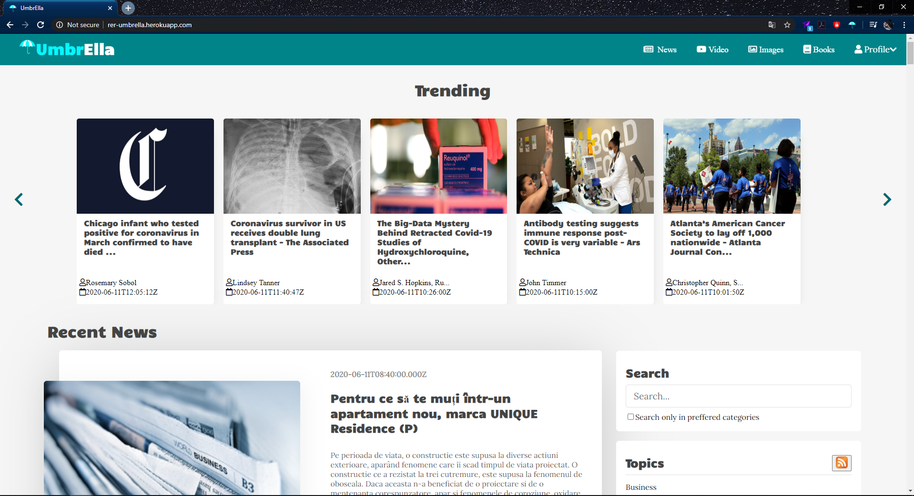

De câte ori am întâmpinat problema să căutăm prea mult o imagine sau o știre de care avem nevoie ?
Aplicația noastră realizează un management a resurselor și soluționează problema de mai sus, dând
recomandări prin notificări live utilizatorilor.
Nu este esențial să vă creați un cont pentru a puea folosi platforma noastră WEB, însa un cont v-ar
aduce câteva
privilegii. În plus. oferim și o extensie la browser-ul dumneavoastră, care asigură o interacțiune mai
ușoară și
eficientă cu aplicația.
De ce UmbrElla? Pentru că aducem tot ce îți place ție aici și "le unim" sub o umbrelă. Get it
all together, under
the
UmbrElla
Utilizatori nelogați
Aplicația noastră tinde să fie cât mai utilă atât pentru utilizatori logați cât și pentru cei nelogați.
Fără
a avea un cont puteți folosi
atât extensia, cât și site-ul. Salvăm temporar preferințele dumneavoastră și vă oferim resurse,
notificări
despre tendințele în domeniile
voastre de interes.
Logare / Înregistrare
În cadrul extensiei există o referință către pagina de înregistrare/logare, dar și în pagină în secțiunea
profil poate fi găsit
linkul către această pagina. Pentru crearea unui cont e nevoie doar de o adresă de email. E de menționat
că puteți
crea un singur cont, cu o adresă de email.
Pentru înregistrare putem observa în imaginea de mai jos ce date trebuie sa introducem, iar logarea poate
fi realizată și de pe site
și din extensie, la fel puteți observa în imaginile de mai jos.



Resurse
Platforma oferă recomandări de știri, video, imagini și cărți. Dispunem de un număr mare de resurse, ce
sunt actualizate o dată la 30 de minute, la fel oferim o diversitate de domeni de interes, în care sigur
vă veți regăsi.
Voi atașa mai jos câteva poze cu paginile de resurse.


Setare preferințe
De această funcționalitate se pot folosi ambele tipuri de utilizatori : cu cont sau fără cont. Diferența
e că utilizatorilor
înregistrați în aplicație le vom păstra preferințele până la următoarea sesiune, iar în cazul celor nelogați preferințele
se salvează doar local.
Pentru a putea accesa setările de preferințe, le găsiți în secțiunea de profil din header, la settings,
unde se observă și alte
aspecte ce pot fi modificate precum nume,prenume,username (valabil doar pentru cei logați, cei nelogați
vor vedea doar compartimentul de preferințe).
Ca sa facem acest lucru din extensie, la fel accesăm secțiunea de setări și salvăm propriile preferințe.
Vă oferim și posibilitatea de adăuga propriile link-uri de la care doriți să primiți fluxuri de
informații, sau să
dezactivați/activați altele.
Căutare resurse
Fiecare pagina dispune de o sectiune de căutare, unde puteți căuta dupa anumite cuvinte cheie, sau
selecta după topicurile enumerate
ale respectivei resurse. La fel puteți decide dacă căutarea să se facă doar în cadrul domeniilor
dumneavoastră de interes sau
dacă doriți una mai amplă prin toate categoriile.
Descărcare flux RSS
Pe fiecare pagină există un buton portocaliu, la secțiunea topics, de unde puteți descărca în format RSS.
Administrator
Administratorul gestionează aplicația WEB. În special răspunde la mesajele utilizatorilor, eventual
remediind
anumite probleme tehnice, apreciere de feedback, creare de un nou administrator și urmărire de
statistici. Toate aceste informații sunt
disponibile în format CSV.
Dacă doriți să deveniți un administrator, membru al staff-ului nostru, dati-ne un mesaj din sectiunea Contact Us, iar noi
vom analiza contul dvs și vom reveni cu informații.
Contact Us
Această secțiune o găsiți în footer-ul paginii. Așteptăm acolo mesajele voastre și revenim cu un răspuns
cel mai curând posibil.